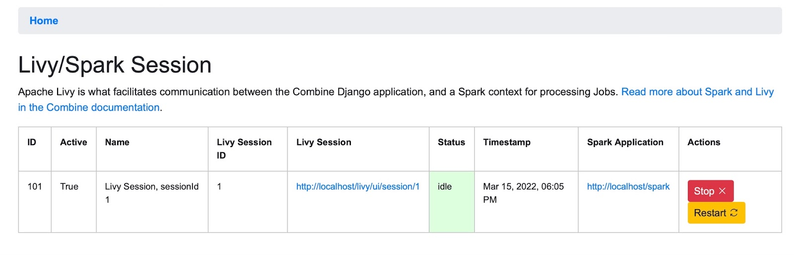

Combine has a number of server components, dependencies, and configurations that must be in place to work, as it leverages Apache Spark, among other applications, for processing on the backend. Combine installation using Docker manages most (but not all) of these dependencies for you.
The complete Linux Combine installation instructions are available as the last section on this page. The overview below is a good starting point for understanding the broad process.
Major components that support Combine have been broken out into distinct Docker images and containers. Using Docker Compose, each of these major components is associated with a Docker Compose service. Some share base images, others are pulled from 3rd party Docker images (like ElasticSearch and Mongo).
Docker Compose provides a way to interact with all the containers that support Combine at once, even providing some improved ability to view logs, restart services, etc.
The file docker-compose.yml contains most of the instructions used to describe the services and dependencies that comprise combine-docker.
Windows only: An important git config before you download code!
Before you clone the repository on Windows, ensure that you have your git configured not to add Windows-style line endings. I believe you can do this by setting:
git config --global core.autocrlf false
The first install step is to clone this repository and move into it:
git clone https://github.com/mi-dpla/combine-docker.git
cd combine-docker
The complete instructions include important information on upgrading an existing Combine server. Using the detailed instructions is strongly recommended. The complete Linux Combine installation instructions are available as the last section on this page.
Abbreviated InstructionsNOTE: All of the scripts assume you are building on Ubuntu 18.04 LTS.
Windows only: In the next step run build.ps1 instead of build.sh
Next, run the build.sh script:
./build.sh
Note: This script may take some time, anywhere from 5-20 minutes depending on your hardware. This script accomplishes a few things:
Once a build is complete, configurations may be performed on Combine's localsettings.py. This file is found at ./combine/combine/combine/localsettings.py. This file will be maintained between upgrades.
Ensuring that first_build.sh (or update_build.sh if appropriate) has been run, fire up all containers with the following:
docker-compose up -d
Logs can be viewed with the logs command, again, selecting all services, or a subset of:
tail all logs: docker-compose logs -f
tail logs of specific services: docker-compose logs -f combine-django combine-celery livy
As outlined in the Combine-Docker Containers section all services, or a subset of, can be restarted as follows:
To restart Combine Django app, background tasks Celery, and Livy:
docker-compose restart combine-django combine-celery
To restart everything: docker-compose restart
To stop all services and containers (Reminder: Do not include -v or --volumes flags, as these will wipe ALL data from Combine):
docker-compose down
To view stats of containers: docker stats
This section assumes that combine installation was successful and the server web page is available at http://[server].[domain]/combine which we will indicate simply with combine.
The most reliable way is to ssh into the server as an administrative user who can authenticate themselves:
ssh username]@[server].[domain]
>Docker-Compose
Once Combine is installed, docker-compose commands are used to start and stop the application. In the /opt/combine-docker directory use:
To start Combine: docker-compose up
To stop Combine: docker-compose down
You can confirm that Combine is running by visiting http://combine, where you should be prompted to login with a username and password. For default/testing installations, you can use combine / combine for these credentials.
Combine makes use of the DPLA’s Ingestion 3 codebase where possible. Like Ingestion 3, it relies on Apache Spark to process large numbers of records. Spark is a fast and general processing engine that can handle thousands of metadata records quickly. Apache Livy is a service that enables easy interaction with a Spark service over a REST interface. It enables easy submission and monitoring of Spark jobs from Combine.
This architecture allows users to submit records to Livy jobs (and hence to Spark) for batch processing and it makes Combine relatively fast and efficient, but adds a level of complexity by requiring Livy to run.
In Combine, only one active Livy Session is allowed at a time. This is partially for performance reasons, to keep Livy from consuming all of the server’s resources, and partially to ensure that Spark Jobs are run in an order
To run any Jobs, Combine relies on an active (idle) Apache Livy session. Livy is what makes running Spark jobs possible via the request/response cycle of a Django application.
Currently, users are responsible for determining if the Livy session is ready.
To check and/or start a new Livy session, select the System: Spark item in the navigation bar. The important column is status which should read idle. If not, click Stop or Remove under the actions column, and once stopped, click the start new session button near the top.
Removing and creating a new Spark Session will usually be unnecessary, but a user can resort to that option if the current Session cannot be restarted.

Livy takes anywhere from 10-20 seconds to start and become idle.
You can check the status of the Livy session at a glance from the Combine navigation bar, where the workSpark next to System should have a green colored lettering if active or red if it is not active.
Undoubtedly, things might go sideways! As Combine is still quite rough around some edges, here are some common gotchas you may encounter.
ElasticSearch container dies because ofvm.max_map_count
Depending on machine and OS (Linux, Mac, Windows), might need to bump vm.max_map_count on Docker host machine (seems to be particularly true on older ones): https://www.elastic.co/guide/en/elasticsearch/reference/current/docker.html#docker-cli-run-prod-mode
port collision error: port is already allocated
By default, nearly all relevant ports are exposed from the containers that conspire to run Combine, but these can be turned off selectively (or changed) if you have services running on your host that conflict. Look for the ports section for each service in the docker-compose.yml to enable or disable them.
java.lang.ClassNotFoundException: org.elasticsearch.hadoop.mr.LinkedMapWritable
Make sure that the elasticsearch-hadoop-x.y.z.jar in combinelib matches the version specified in the ELASTICSEARCH_HADOOP_CONNECTOR_VERSION environment variable configured in your env.
The best way to diagnose why a job may have failed, from the RecordGroup screen, is to click “Livy Statement” link under the Monitor column. This returns the raw output from the Spark job, via Livy which dispatches jobs to Spark.
A common error is a stale Livy connection, specifically its MySQL connection, which is revealed at the end of the Livy statement output by:
MySQL server has gone away
This can be fixed by restarting the Livy session.
Information for diagnosing can be found in the Livy logs at /var/log/livy/livy.stderr.
This Dockerized version of Combine supports, arguably, easier version updating because major components, broken out as images and containers, can be readily rebuilt. Much like the repository Combine-Playbook, this repository follows the same versioning as Combine. So checking out the tagged release v0.11.1 for this repository, will build Combine version v0.11.1.
To update, follow these steps from the Combine-Docker repository root folder:
# pull new changes to Combine-Docker repository
git pull
# checkout desired release, e.g. v0.11.1
git checkout v0.11.1
# run update build script
./update_build.sh
# Restart as per normal
docker-compose up -d
This Dockerized version of Combine includes the following services, where each becomes a single container:
| Service Name | Notes |
|---|---|
| host machine | not a container, but part of internal network |
| elasticsearch | |
| mongo | |
| mysql | |
| redis | |
| hadoop-namenode | |
| hadoop-datanode | |
| spark-master | not currently used |
| spark-worker | not currently used |
| combine-django | |
| livy | location of spark application running in local[*] mode |
| combine-celery |
The following tables show Docker volumes and binds that are created to support data sharing between containers, and "long-term" data storage. The column Data Storage indicates which volumes act as data stores for Combine and should not be deleted (unless, of course, a fresh installation is desired). Conversely, the column Refreshed on Upgrade shows which tables are removed during builds. Note: this information is purely for informational purposes only; the build scripts and normal usage of docker-compose up and docker-compose down will not remove these volumes.
| Volume Name | Type | Source | Target | Data Storage | Refreshed on Update | Associated Services |
|---|---|---|---|---|---|---|
| esdata | namedvolume | n/a | /usr/share/elasticsearch/data | TRUE | elasticsearch | |
| mongodata | namedvolume | n/a | /data/db | TRUE | mongo | |
| mysqldata | namedvolume | n/a | /var/lib/mysql | TRUE | mysql | |
| hdfs | namedvolume | n/a | /hdfs | TRUE | hadoop-namenode,hadoop-datanode | |
| combine_home | namedvolume | n/a | /home/combine | TRUE | [spark-cluster-base] | |
| combine_django_app | bind | ./combine/combine | /opt/combine | TRUE | combine-django,combine-celery,livy | |
| combine_python_env | namedvolume | n/a | /opt/conda/envs/combine | TRUE | combine-django,combine-celery,livy | |
| hadoop_binaries | namedvolume | n/a | /opt/hadoop | TRUE | [spark-cluster-base] | |
| spark_binaries | namedvolume | n/a | /opt/spark | TRUE | [spark-cluster-base] | |
| livy_binaries | namedvolume | n/a | /opt/livy | TRUE | [spark-cluster-base] | |
| combine_tmp | namedvolume | n/a | /tmp | TRUE | [spark-cluster-base] |
The Combine Django application, where most development efforts are targeted, is a bind mount volume from the location of this cloned repository on disk at ./combine/combine. Though the application is copied to the docker images during build, to support the installation of dependencies, the location /opt/combine is overwritten by this bind volume at docker-compose up or run. This allows live editing of the local folder ./combine/combine, which is updating the folder /opt/combine in services combine-django, combine-celery, and livy.
The folder ./combine/combine can, for the most part, be treated like a normal GitHub repository. For example, one could checkout or create a new branch, and then push and pull from there.
Combine itself has automated tests. If you want to run them from inside here, you will need to uncomment the ports sections for mysql and mongo in docker-compose.yml, and you will also need to edit your /etc/hosts file to redirect mysql and mongo to 127.0.0.1. This is because the host machine needs to have access to the databases for the Django test runner to set up and tear down around each run.
Combine is designed to handle sets of metadata small to large, 400 to 4,000,000 Records. Some of the major associated server components include:
Given the relative complexity of this stack, and the interconnected nature of the components, Combine is designed to be deployed using Docker, which automatically pulls updated component images at installation. The default build requires 8g of RAM, with the more CPU cores the better.
This part of the documentation aims to explain, and indicate how to modify or configure, some of these critical components.
Combine is an application to facilitate the harvesting, transformation, analysis, and publishing of metadata records by Service Hubs for inclusion in the Digital Public Library of America (DPLA).
These technical instructions are for metadata experts or system administrators who wish to install Combine on their institution’s servers to process and publish metadata records to DPLA. Version 0.11 includes a number of bug fixes and improvements.
Help is available for combine installation at combine-support@umich.edu. You can also add issues to the combine github at https://github.com/MI-DPLA/combine.
/etc/docker/daemon.json with the following contents: { “dns”: [“{your dns server address}”] }/etc/docker/daemon.jsoncombine-docker/combine/combine_db_prepare.shMigrating data from previous versions of Combine
/opt/combine/${blah}.zip”Next: The Command Line